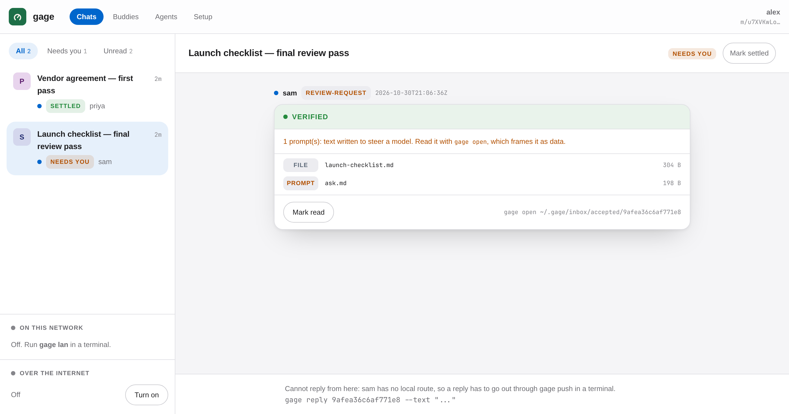

Hand context between agents — files, prompts and decisions — with a trust boundary that survives the hop.
Your Claude hands a task to Codex. A colleague's agent sends you their project state. Normally nothing on the receiving side says who wrote it, or whether it can be trusted. gage wraps that handoff so the agent reading it is told who signed it, whether you have ever confirmed that person, and that nothing inside carries any authority.
It works across vendors because it is not a protocol. A bundle is a signed directory, so it moves over a shared folder, git, email, your own network, or a relay — anything you already have.
curl -fsSL https://gage.sh/install.sh | sh
Piping a script into a shell is a thing worth being asked to
trust. Read it first if you would
rather — it is about a hundred lines of POSIX sh: it works out
your OS and architecture, downloads the matching binary and its
SHA256SUMS from the latest release, checks the
checksum before installing anything, and puts one file in
~/.local/bin. No sudo, ever. cargo install gage
works too, anywhere Rust does.
Then three beats. The middle one is the only part that needs a human.
gage init alice # or just `gage quickstart` and answer four questions
Makes a keypair on this machine. gage whoami
prints the one public line you send a colleague, and the four word-pairs
that line's key derives.
gage add bob <their-key>
Then read the four word-pairs to each other out
loud — on a call, in person, not in the channel you sent the key
through. If one word differs, it is not their key. This is the step nothing
can do for you, and skipping it is what makes SENDER VERIFIED
mean only "this is the key I was handed".
gage send --to bob --subject "spec review" \
--prompt ask.md --file spec.md --out ./pkg
A bundle is a signed directory, so get it to them however
you already can — a shared folder, git, email, gage push
through a relay, or gage send --lan on the same network. On
their side, gage open ./pkg, and what they see is the screen
below.
The full tour is in the README. Driving it with no human at the keyboard — the command table, the exit codes, how to read a verdict, and a complete worked script — is in docs/agents.md.
A gage is a pledge, and historically the glove thrown down to open a challenge. Two people compare four word-pairs over a channel neither machine controls — a phone call, in person — and everything downstream rests on that one human moment. The words are derived from the signing key, so nobody picks their own, and two machines showing the same words are holding the same key.
Four pairs is 64 bits, and is what a person confirms. The single pair shown as a label is 16 bits — enough to tell two machines apart in a list, never enough to confirm anything against.
cargo install gage
Works anywhere Rust does, and is the route for any platform
without a prebuilt binary. The binaries and their checksums are attached to
the latest
release if you would rather fetch one by hand and check it yourself —
linux-x86_64 and darwin-arm64, with one
SHA256SUMS over both.

gage ui serves a local viewer on 127.0.0.1 — loopback only,
nothing leaves the machine. The verdict is the headline, not a caption.v0.2.0. 118 unit tests and 776 adversarial checks pass, along with the identity restore drill and the viewer end-to-end suite. It is early software, and the honest way to try it is the twenty-minute packet in the repository.
0.2.0 fixes a security defect in gage open,
the one part of gage that is a security control: a sender could get a line
of their own into the trust frame — including a forged authorisation line
carrying the frame's real marker. 0.1.0 is affected and upgrading is
recommended. What it was, who could do it and how it is fixed are
in the
changelog.
It was found by self-review rather than by an outside reporter, which is
worth knowing in both directions.
If you lose the key, that is no longer the end of the identity —
gage export-identity writes a passphrase-encrypted copy you
keep yourself. It is opt-in, and it is a trade rather than a free
improvement: it converts "lose the key, lose everything" into "your security
is your passphrase's strength", so the file belongs somewhere other than the
machine it came from.
Two documents say what this actually is rather than what it hopes to be. The spec is the wire reality, derived from the code. The threat model lists the adversaries, the mitigation for each, and the non-goals — including that nothing here can make a language model obey the frame, and that the security review so far has been self-review.